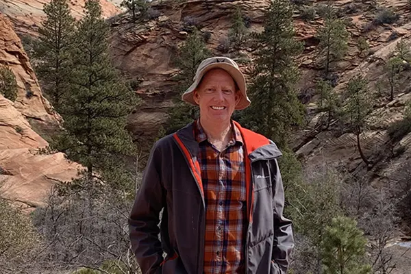

Portal Page
About Me
Paul Cheney is a professor of Web Design and Development at Utah Valley University in Orem, Utah, near Salem. He holds a master's degree in Instructional Technology from Utah State University and a Ph.D. from the University of Virginia. Cheney has worked as a civilian for the U.S. Air Force, at Brigham Young University, and as Director of Media and Instructional Technology at Southern Virginia University. He specializes in responsive design, content management systems, and virtual reality photography, teaching courses for Pluralsight and running Spartan Design University. He has authored multimedia content, developed online courses, and contributed to free sociology textbooks.
Mug Shot
Media
Description of this assignemnt with a few details about it.
View the AssignmentJoin
Description of this assignemnt with a few details about it.
View the AssignmentSchedule
Description of this assignemnt with a few details about it.
View the AssignmentSchedule
Description of this assignemnt with a few details about it.
View the AssignmentSchedule
Description of this assignemnt with a few details about it.
View the Assignment